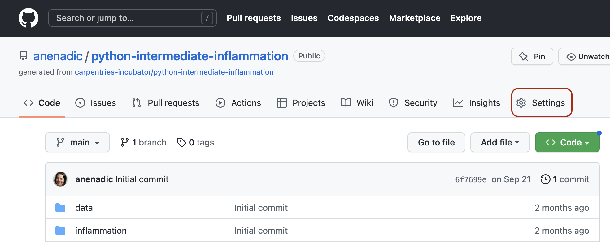
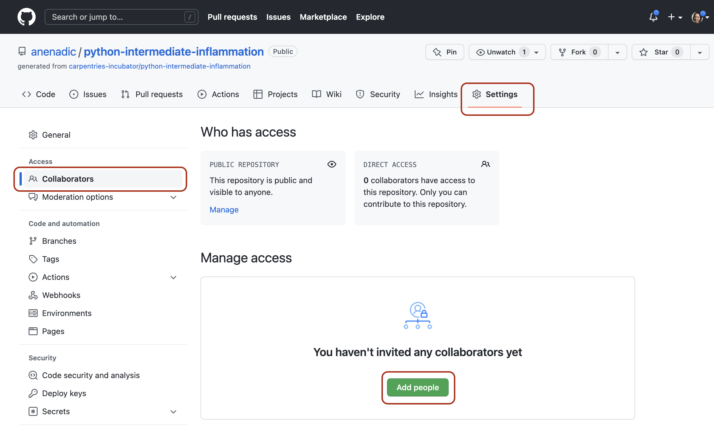
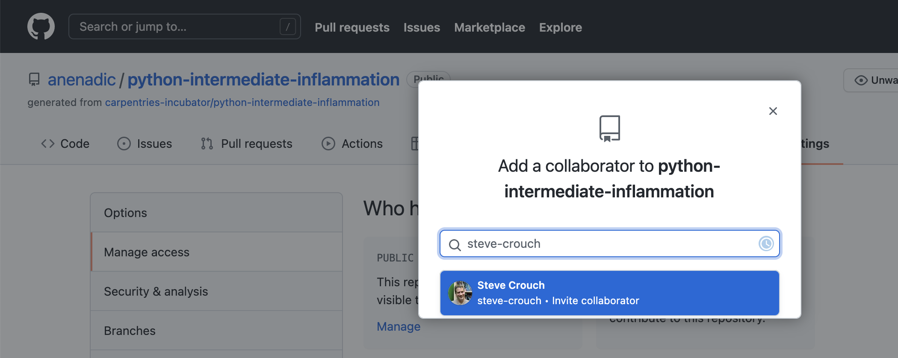
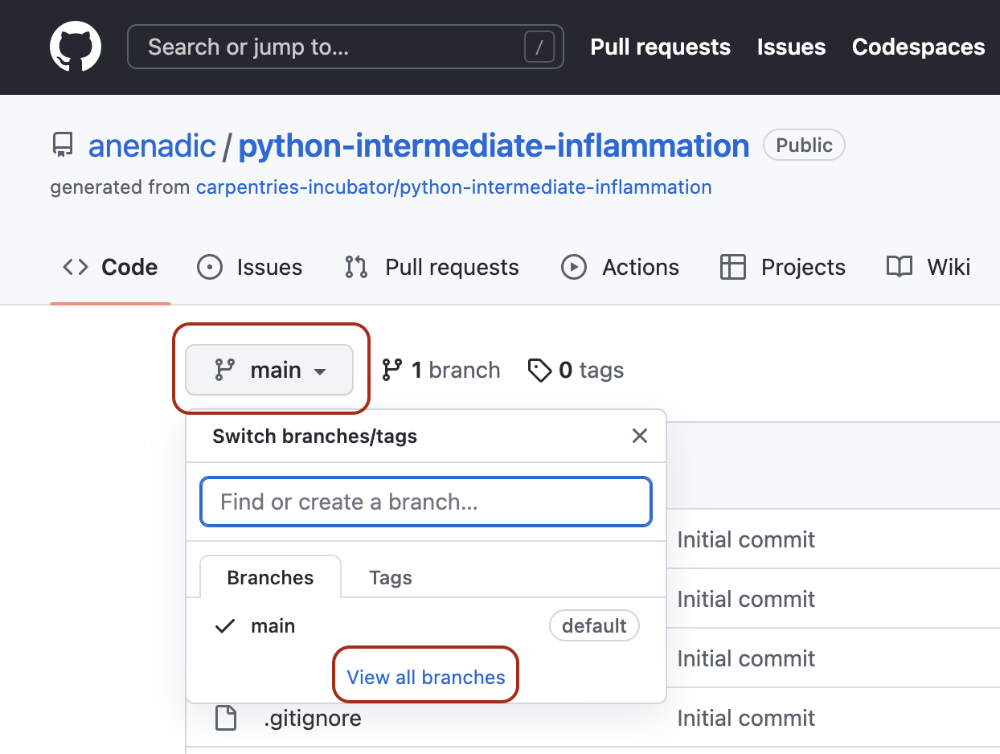
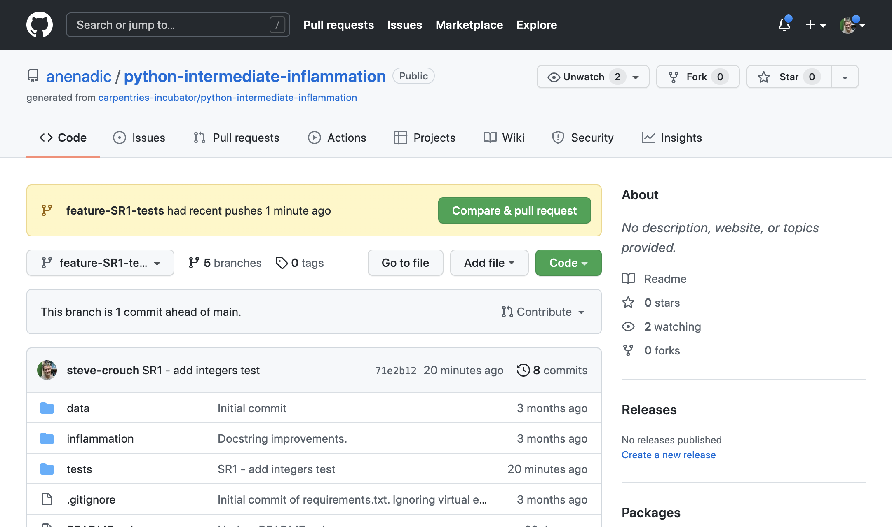
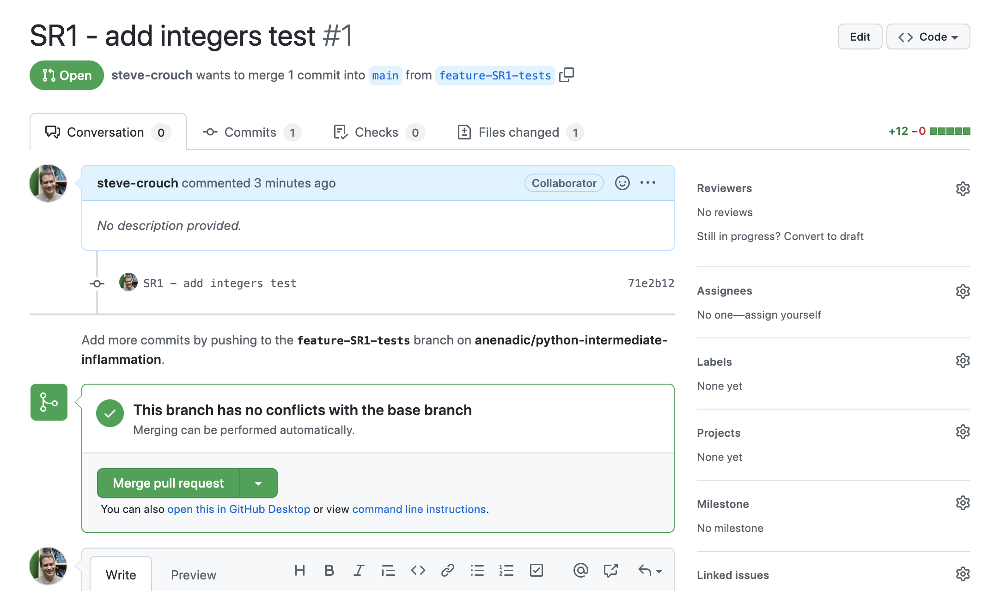

4.1 Developing Software In a Team: Code Review
Last updated on 2024-11-22 | Edit this page
Estimated time: 45 minutes
Overview
Questions
- How do we develop software in a team?
- What is code review and how it can improve the quality of code?
Objectives
- Describe commonly used code review techniques.
- Understand how to do a pull request via GitHub to engage in code review with a team and contribute to a shared code repository.
Introduction
So far in this course we’ve focused on learning software design and (some) technical practices, tools and infrastructure that help the development of software in a team environment, but in an individual setting. Despite developing tests to check our code - no one else from the team had a look at our code before we merged it into the main development stream. Software is often designed and built as part of a team, so in this episode we’ll be looking at how to manage the process of team software development and improve our code by engaging in code review process with other team members.
Collaborative Code Development Models
The way your team provides contributions to the shared codebase depends on the type of development model you use in your project. Two commonly used models are:
- Fork and pull model
- Shared repository model
Fork and Pull Model
In this model, anyone can fork an existing repository (to create their copy of the project linked to the source) and push changes to their personal fork. A contributor can work independently on their own fork as they do not need permissions on the source repository to push modifications to a fork they own. The changes from contributors can then be pulled into the source repository by the project maintainer on request and after a code review process. This model is popular with open source projects as it reduces the start up costs for new contributors and allows them to work independently without upfront coordination with source project maintainers. So, for example, you may use this model when you are an external collaborator on a project rather than a core team member.
Shared Repository Model
In this model, collaborators are granted push access to a single shared code repository. By default, collaborators have write access to the main branch. However, it is best practice to create feature branches for new developments, and protect the main branch. See the extra on protecting the main branch for how to do this. While it requires more upfront coordination, it is easier to share each others work, so it works well for more stable teams. This model is more prevalent with teams and organizations collaborating on private projects.
Regardless of the collaborative code development model you and your collaborators use - code reviews are one of the widely accepted best practices for software development in teams and something you should adopt in your development process too.
Code Review
Code review is a software quality assurance practice where one or several people from the team (different from the code’s author) check the software by viewing parts of its source code.
Group Exercise: Advantages of Code Review
Discuss as a group: what do you think are the reasons behind, and advantages of, code review?
The purposes of code review include:
- improving internal code readability, understandability, quality and maintainability
- checking for coding standards compliance, code uniformity and consistency
- checking for test coverage and detecting bugs and code defects early
- detecting performance problems and identifying code optimisation points
- finding alternative/better solutions.
An effective code review prevents errors from creeping into your software by improving code quality at an early stage of the software development process. It helps with learning, i.e. sharing knowledge about the codebase, solution approaches, expectations regarding quality, coding standards, etc. Developers use code review feedback from more senior developers to improve their own coding practices and expertise. Finally, it helps increase the sense of collective code ownership and responsibility, which in turn helps increase the “bus factor” and reduce the risk resulting from information and capabilities being held by a single person “responsible” for a certain part of the codebase and not being shared among team members.
Code review is one of the most useful team code development practices - someone checks your design or code for errors, they get to learn from your solution, having to explain code to someone else clarifies your rationale and design decisions in your mind too, and collaboration helps to improve the overall team software development process. It is universally applicable throughout the software development cycle - from design to development to maintenance. According to Michael Fagan, the author of the code inspection technique, rigorous inspections can remove 60-90% of errors from the code even before the first tests are run (Fagan, 1976). Furthermore, according to Fagan, the cost to remedy a defect in the early (design) stage is 10 to 100 times less compared to fixing the same defect in the development and maintenance stages, respectively. Since the cost of bug fixes grows in orders of magnitude throughout the software lifecycle, it is far more efficient to find and fix defects as close as possible to the point where they were introduced.
There are several code review techniques with various degree of formality and the use of a technical infrastructure, including:
- Over-the-shoulder code review is the most common and informal of code review techniques and involves one or more team members standing over the code author’s shoulder while the author walks the reviewers through a set of code changes.
- Email pass-around code review is another form of lightweight code review where the code author packages up a set of changes and files and sends them over to reviewers via email. Reviewers examine the files and differences against the code base, ask questions and discuss with the author and other developers, and suggest changes over email. The difficult part of this process is the manual collection the files under review and noting differences.
- Pair programming is a code development process that incorporates continuous code review - two developers sit together at a computer, but only one of them actively codes whereas the other provides real-time feedback. It is a great way to inspect new code and train developers, especially if an experienced team member walks a younger developer through the new code, providing explanations and suggestions through a conversation. It is conducted in-person and synchronously but it can be time-consuming as the reviewer cannot do any other work during the pair programming period.
- Fagan code inspection is a formal and heavyweight process of finding defects in specifications or designs during various phases of the software development process. There are several roles taken by different team members in a Fagan inspection and each inspection is a formal 7-step process with a predefined entry and exit criteria. See Fagan inspection for full details on this method.
-
Tool-assisted code review process uses a
specialised tool to facilitate the process of code review, which
typically helps with the following tasks:
- collecting and displaying the updated files and highlighting what has changed,
- facilitating a conversation between team members (reviewers and developers), and
- allowing code administrators and product managers a certain control and overview of the code development workflow. Modern tools may provide a handful of other functionalities too, such as metrics (e.g. inspection rate, defect rate, defect density).
Each of the above techniques have their pros and cons and varying degrees practicality - it is up to the team to decide which ones are most suitable for the project and when to use them. We will have a look at the tool-assisted code review process using GitHub’s built-in code review tool - pull requests. It is a lightweight tool, included with GitHub’s core service for free and has gained popularity within the software development community in recent years.
Code Reviews via GitHub’s Pull Requests
Pull requests are fundamental to how teams review and improve code on
GitHub (and similar code sharing platforms) - they let you tell others
about changes you’ve pushed to a branch in a repository on GitHub and
that your code is ready for review. Once a pull request is opened, you
can discuss and review the potential changes with others on the team and
add follow-up commits based on the feedback before your changes are
merged from your feature branch into the develop branch.
The name ‘pull request’ suggests you are requesting the
codebase moderators to pull your changes into the
codebase.
Such changes are normally done on a feature branch, to ensure that
they are separate and self-contained, that the main branch only contains
“production-ready” work, and that the develop branch
contains code that has already been extensively tested. You create a
branch for your work based on one of the existing branches (typically
the develop branch but can be any other branch), do some
commits on that branch, and, once you are ready to merge your changes,
create a pull request to bring the changes back to the branch that you
started from. In this context, the branch from which you branched off to
do your work and where the changes should be applied back to is called
the base branch, while the feature branch that contains
changes you would like to be applied is the head
branch.
How you create your feature branches and open pull requests in GitHub will depend on your collaborative code development model:
- In the shared repository model, in order to create a feature branch and open a pull request based on it you must have write access to the source repository or, for organisation-owned repositories, you must be a member of the organisation that owns the repository. Once you have access to the repository, you proceed to create a feature branch on that repository directly.
- In the fork and pull model, where you do not have write permissions to the source repository, you need to fork the repository first before you create a feature branch (in your fork) to base your pull request on.
In both development models, it is recommended to create a feature branch for your work and the subsequent pull request, even though you can submit pull requests from any branch or commit. This is because, with a feature branch, you can push follow-up commits as a response to feedback and update your proposed changes within a self-contained bundle. The only difference in creating a pull request between the two models is how you create the feature branch. In either model, once you are ready to merge your changes in - you will need to specify the base branch and the head branch.
Code Review and Pull Requests In Action
Let’s see this in action - you and your fellow learners are going to be organised in small teams and assume to be collaborating in the shared repository model. You will be added as a collaborator to another team member’s repository (which becomes the shared repository in this context) and, likewise, you will add other team members as collaborators on your repository. You can form teams of two and work on each other’s repositories. If there are 3 members in your group you can go in a round robin fashion (the first team member does a pull request on the second member’s repository and receives a pull request on their repository from the third team member). If you are going through the material on your own and do not have a collaborator, you can do pull requests on your own repository from one to another branch.
Recall solution requirements
SR1.1.1 and SR1.2.1 from an earlier episode. Your team member has
implemented one of them according to the specification (let’s call it
feature-x) but tests are still missing. You are now tasked
with implementing tests on top of that existing implementation to make
sure the new feature indeed satisfies the requirements. You will propose
changes to their repository (the shared repository in this context) via
pull request (acting as the code author) and engage in code review with
your team member (acting as a code reviewer). Similarly, you will
receive a pull request on your repository from another team member, in
which case the roles will be reversed. The following diagram depicts the
branches that you should have in the repository.
Adapted from Git Tutorial by sillevl (Creative Commons Attribution 4.0 International License)
To achieve this, the following steps are needed.
Step 1: Adding Collaborators to a Shared Repository
You need to add the other team member(s) as collaborator(s) on your repository to enable them to create branches and pull requests. To do so, each repository owner needs to:
- Head over to Settings section of your software project’s repository in GitHub. 
- Select the vertical tab ‘Collaborators’ from the left and click the ‘Add people’ button. 
- Add your collaborator(s) by their GitHub username(s), full name(s) or email address(es). 
- Collaborator(s) will be notified of your invitation to join your repository based on their notification preferences.
- Once they accept the invitation, they will have the collaborator-level access to your repository and will show up in the list of your collaborators.
See the full details on collaborator permissions for personal repositories to understand what collaborators will be able to do within your repository. Note that repositories owned by an organisation have a more granular access control compared to that of personal repositories.
Step 2: Preparing Your Local Environment for a Pull Request
- Obtain the GitHub URL of the shared repository you will be working on and clone it locally (make sure you do it outside your software repository’s folder you have been working on so far). This will create a copy of the repository locally on your machine along with all of its (remote) branches.
Check with the repository owner (your team member) which feature (SR1.1.1 or SR1.2.1) they implemented in the previous exercise and what is the name of the branch they worked on. Let’s assume the name of the branch was
feature-x(you should amend the branch name for your case accordingly).Your task is to add tests for the code on
feature-xbranch. You should do so on a separate branch calledfeature-x-tests, which will branch offfeature-x. This is to enable you later on to create a pull request from yourfeature-x-testsbranch with your changes that can then easily be reviewed and compared withfeature-xby the team member who created it.
To do so, branch off a new local branch feature-x-tests
from the remote feature-x branch (making sure you use the
branch names that match your case). Also note that, while we say
“remote” branch feature-x - you have actually obtained it
locally on your machine when you cloned the remote repository.
You are now located in the new (local) feature-x-tests
branch and are ready to start adding your code.
Step 3: Adding New Code
Exercise: Implement Tests for the New Feature
Look back at the solution requirements (SR1.1.1 or SR1.2.1) for the feature that was implemented in your shared repository. Implement tests against the appropriate specification in your local feature branch.
Note: Try not to not fall into the trap of writing the tests to test the existing code/implementation - you should write the tests to make sure the code satisfies the requirements regardless of the actual implementation. You can treat the implementation as a black box - a typical approach to software testing - as a way to make sure it is properly tested against its requirements without introducing assumptions into the tests about its implementation.
Testing Based on Requirements
Tests should test functionality, which stem from the software requirements, rather than an implementation. Tests can be seen as a reflection of those requirements - checking if the requirements are satisfied.
Remember to commit your new code to your branch
feature-x-tests.
Step 4: Submitting a Pull Request
When you have finished adding your tests and committed the changes to
your local feature-x-tests, and are ready for the others in
the team to review them, you have to do the following:
- Push your local feature branch
feature-x-testsremotely to the shared repository.
- Head over to the remote repository in GitHub and locate your new
(
feature-x-tests) branch from the dropdown box on the Code tab (you can search for your branch or use the “View all branches” option).  - Open a pull request by clicking “Compare & pull request” button. 
- Select the base and the head branch, e.g.
feature-xandfeature-x-tests, respectively. Recall that the base branch is where you want your changes to be merged and the head branch contains your changes. - Add a comment describing the nature of the changes, and then submit the pull request.
- Repository moderator and other collaborators on the repository (code reviewers) will be notified of your pull request by GitHub.
- At this point, the code review process is initiated.
You should receive a similar pull request from other team members on your repository.
Step 5: Code Review
- The repository moderator/code reviewers reviews your changes and provides feedback to you in the form of comments.
- Respond to their comments and do any subsequent commits, as requested by reviewers.
- It may take a few rounds of exchanging comments and discussions until the team is ready to accept your changes.
Perform the above actions on the pull request you received, this time acting as the moderator/code reviewer.
Step 6: Closing a Pull Request
- Once the moderator approves your changes, either one of you can merge onto the base branch. Typically, it is the responsibility of the code’s author to do the merge but this may differ from team to team. 
- Delete the merged branch to reduce the clutter in the repository.
Repeat the above actions for the pull request you received.
If the work on the feature branch is completed and it is sufficiently
tested, the feature branch can now be merged into the
develop branch.
Best Practice for Code Review
There are multiple perspectives to a code review process - from general practices to technical details relating to different roles involved in the process. It is critical for the code’s quality, stability and maintainability that the team decides on this process and sticks to it. Here are some examples of best practices for you to consider (also check these useful code review blogs from Swarmia and Smartbear):
- Decide the focus of your code review process, e.g., consider some of the following:
- code design and functionality - does the code fit in the overall design and does it do what was intended?
- code understandability and complexity - is the code readable and would another developer be able to understand it?
- tests - does the code have automated tests?
- naming - are names used for variables and functions descriptive, do they follow naming conventions?
- comments and documentation - are there clear and useful comments that explain complex designs well and focus on the “why/because” rather than the “what/how”?
- Do not review code too quickly and do not review for too long in one sitting. According to “Best Kept Secrets of Peer Code Review” (Cohen, 2006) - the first hour of review matters the most as detection of defects significantly drops after this period. Studies into code review also show that you should not review more than 400 lines of code at a time. Conducting more frequent shorter reviews seems to be more effective.
- Decide on the level of depth for code reviews to maintain the balance between the creation time and time spent reviewing code - e.g. reserve them for critical portions of code and avoid nit-picking on small details. Try using automated checks and linters when possible, e.g. for consistent usage of certain terminology across the code and code styles.
- Communicate clearly and effectively - when reviewing code, be explicit about the action you request from the author.
- Foster a positive feedback culture:
- give feedback about the code, not about the author
- accept that there are multiple correct solutions to a problem
- sandwich criticism with positive comments and praise
- Utilise multiple code review techniques - use email, pair programming, over-the-shoulder, team discussions and tool-assisted or any combination that works for your team. However, for the most effective and efficient code reviews, tool-assisted process is recommended.
- From a more technical perspective:
- use a feature branch for pull requests as you can push follow-up commits if you need to update your proposed changes
- avoid large pull requests as they are more difficult to review. You can refer to some studies and Google recommendations as to what a “large pull request” is but be aware that it is not exact science.
- don’t force push to a pull request as it changes the repository history and can corrupt your pull request for other collaborators
- use pull request states in GitHub effectively (based on your team’s
code review process) - e.g. in GitHub you can open a pull request in a
DRAFTstate to show progress or request early feedback;READY FOR REVIEWwhen you are ready for feedback;CHANGES REQUESTEDto let the author know they need to fix the requested changes or discuss more;APPROVEDto let the author they can merge their pull request.
Exercise: Code Review in Your Own Working Environment
At the start of this episode we briefly looked at a number of techniques for doing code review, and as an example, went on to see how we can use GitHub Pull Requests to review team member code changes. Finally, we also looked at some best practices for doing code reviews in general.
Now think about how you typically develop code, and how you might institute code review practices within your own working environment. Write down briefly for your own reference (perhaps using bullet points) some answers to the following questions:
- Which 2 or 3 key circumstances would code review be most useful for you and your colleagues?
- Referring to the first section of this episode above, which type of code review would be most useful for each circumstance (and would work best within your own working environment)?
- Taking one of these circumstances where code review would be most
beneficial, how would you organise such a code review, e.g.:
- Which aspects of the codebase would be the most useful to cover?
- How often would you do them?
- How long would the activity take?
- Who would ideally be involved?
- Any particular practices you would use?
Key Points
- Code review is a team software quality assurance practice where team members look at parts of the codebase in order to improve their code’s readability, understandability, quality and maintainability.
- It is important to agree on a set of best practices and establish a code review process in a team to help to sustain a good, stable and maintainable code for many years.